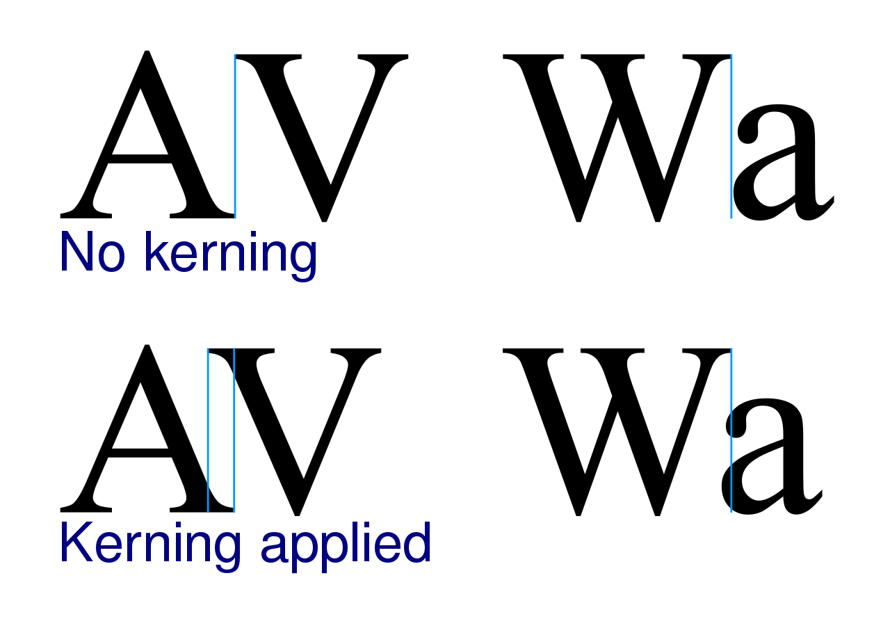

In metal typesetting, a font is a particular size, weight and style of a typeface. Each font is a matched set of type, with a piece (a "sort") for each glyph. A typeface consists various fonts that share an overall design.
In modern usage, with the advent of computer fonts, the term "font" has come to be used as a synonym for "typeface", although a typical typeface (or "font family") consists of several fonts. For instance, the typeface "Bauer Bodoni" (sample shown here) includes fonts "Roman" (or "Regular"), "Bold" and "Italic"; each of these exists in a variety of sizes. The term "font" is correctly applied to any one of these alone but may be seen used loosely to refer to the whole typeface. When used in computers, each style is in a separate digital "font file".
In both traditional typesetting and modern usage, the word "font" refers to the delivery mechanism of the typeface. In traditional typesetting, the font would be made from metal or wood type: to compose a page may require multiple fonts or even multiple typefaces.
Etymology
The word font (traditionally spelled fount in British English, but in any case pronounced /ˈfɒnt/) derives from Middle French fonte "[something that has been] melted; a casting". The term refers to the process of casting metal type at a type foundry.
Metal type
In a manual printing (letterpress) house the word "font" would refer to a complete set of metal type that would be used to typeset an entire page. Upper- and lowercase letters get their names because of which case the metal type was located in for manual typesetting: the more distant upper case or the closer lower case. The same distinction is also referred to with the terms majuscule and minuscule.
Unlike a digital typeface, a metal font would not include a single definition of each character, but commonly used characters (such as vowels and periods) would have more physical type-pieces included. A font when bought new would often be sold as (for example in a Roman alphabet) 12pt 14A 34a, meaning that it would be a size 12-point font containing 14 uppercase "A"s, and 34 lowercase "A"s.
The rest of the characters would be provided in quantities appropriate for the distribution of letters in that language. Some metal type characters required in typesetting, such as dashes, spaces and line-height spacers, were not part of a specific font, but were generic pieces that could be used with any font.[2] Line spacing is still often called "leading", because the strips used for line spacing were made of lead (rather than the harder alloy used for other pieces). This spacing strip was made from lead because lead was a softer metal than the traditional forged metal type pieces (which was part lead, antimony and tin) and would compress more easily when "locked up" in the printing "chase" (i.e. a carrier for holding all the type together).
In the 1880s–1890s, "hot lead" typesetting was invented, in which type was cast as it was set, either piece by piece (as in the Monotype technology) or in entire lines of type at one time (as in the Linotype technology).
Characteristics
In addition to the character height, when using the mechanical sense of the term, there are several characteristics which may distinguish fonts, though they would also depend on the script(s) that the typeface supports. In European alphabetic scripts, i.e. Latin, Cyrillic and Greek, the main such properties are the stroke width, called weight, the style or angle and the character width.
The regular or standard font is sometimes labeled roman, both to distinguish it from bold or thin and from italic or oblique. The keyword for the default, regular case is often omitted for variants and never repeated, otherwise it would be Bulmer regular italic, Bulmer bold regular and even Bulmer regular regular. Roman can also refer to the language coverage of a font, acting as a shorthand for "Western European".
Different fonts of the same typeface may be used in the same work for various degrees of readability and emphasis, or in a specific design to make it be of more visual interest.
Weight
The weight of a particular font is the thickness of the character outlines relative to their height.
A typeface may come in fonts of many weights, from ultra-light to extra-bold or black; four to six weights are not unusual, and a few typefaces have as many as a dozen. Many typefaces for office, web and non-professional use come with a normal and a bold weight which are linked together. If no bold weight is provided, many renderers (browsers, word processors, graphic and DTP programs) support a bolder font by rendering the outline a second time at an offset, or smearing it slightly at a diagonal angle.
Style
In European typefaces, especially Roman ones, a slope or slanted style is used to emphasize important words. This is called italic type or oblique type. These designs normally slant to the right in left-to-right scripts. Oblique styles are often called italic, but differ from "true italic" styles.
Italic styles are more flowing than the normal typeface, approaching a more handwritten, cursive style, possibly using ligatures more commonly or gaining swashes. Although rarely encountered, a typographic face may be accompanied by a matching calligraphic face (cursive, script), giving an exaggeratedly italic style.
In many sans-serif and some serif typefaces, especially in those with strokes of even thickness, the characters of the italic fonts are only slanted, which is often done algorithmically, without otherwise changing their appearance. Such oblique fonts are not true italics, because lowercase letter shapes do not change, but are often marketed as such. Fonts normally do not include both oblique and italic styles: the designer chooses to supply one or the other.
Width
Some typefaces include fonts that vary the width of the characters (stretch), although this feature is usually rarer than weight or slope. Narrower fonts are usually labeled compressed, condensed or narrow. In Frutiger's system, the second digit of condensed fonts is a 7. Wider fonts may be called wide, extended or expanded. Both can be further classified by prepending extra, ultra or the like. Compressing a font design to a condensed weight is a complex task, requiring the strokes to be slimmed down proportionally and often making the capitals straight-sided. It is particularly common to see condensed fonts for sans-serif and slab-serif families, since it is relatively practical to modify their structure to a condensed weight. Serif text faces are often only issued in the regular width.
These separate fonts have to be distinguished from techniques that alter the letter-spacing to achieve narrower or smaller words, especially for justified text alignment.
Most typefaces either have proportional or monospaced (for example, those resembling typewriter output) letter widths, if the script provides the possibility. Some superfamilies include both proportional and monospaced fonts. Some fonts also provide both proportional and fixed-width (tabular) digits, where the former usually coincide with lowercase text figures and the latter with uppercase lining figures.
Optical size
Some professional digital typefaces include fonts that are optimised for certain sizes, for instance by using a thinner stroke weight if they are intended for large-size display use, or by using ink traps if they are to be printed at small size on poor-quality paper. This was a natural feature in the metal type period for most typefaces, since each size would be cut separately and made to its own slightly different design. As an example of this, experienced Linotype designer Chauncey H. Griffith commented in 1947 that for a type he was working on intended for newspaper use, the 6 point size was not 50% as wide as the 12 point size, but about 71%. However, it declined in use as pantograph engraving, and especially phototypesetting and digital fonts made printing the same font at any size simpler. A mild revival has taken place in recent years. Optical sizes are more common for serif fonts, since their typically finer detail and higher contrast benefits more from being bulked up for smaller sizes and made less overpowering at larger ones
There are several naming schemes for such variant designs.[20] One such scheme, invented and popularized by Adobe Systems, refers to the variant fonts by the applications they are typically used for, with the exact point sizes intended varying slightly by typeface.
Metrics
Font metrics refers to metadata consisting of numeric values relating to size and space in the font overall, or in its individual glyphs. Font-wide metrics include cap height (the height of the capitals), x-height (the height of the lowercase letters) and ascender height, descender depth, and the font bounding box. Glyph-level metrics include the glyph bounding box, the advance width (the proper distance between the glyph's initial pen position and the next glyph's initial pen position), and sidebearings (space that pads the glyph outline on either side). Many digital (and some metal type) fonts are able to be kerned so that characters can be fitted more closely; the pair "Wa" is a common example of this.
Some fonts, especially those intended for professional use, are duplexed: made with multiple weights having the same character width so that (for example) changing from regular to bold or italic does not affect word wrap.Sabon as originally designed was a notable example of this. (This was a standard feature of the Linotype hot metal typesetting system with regular and italic being duplexed, requiring awkward design choices as italics normally are narrower than the roman.)
A particularly important basic set of fonts that became an early standard in digital printing was the Core Font Set included in the PostScript printing system developed by Apple and Adobe. To avoid paying licensing fees for this set, many computer companies commissioned "metrically compatible" knock-off fonts with the same spacing, which could be used to display the same document without it seeming clearly different. Arial and Century Gothic are notable examples of this, being functional equivalents to the PostScript standard fonts Helvetica and ITC Avant Garde respectively.Some of these sets were created in order to be freely redistributable, for example Red Hat's Liberation fonts and Google's Croscore fonts, which duplicate the PostScript set and other common fonts used in Microsoft software such as Calibri.It is not a requirement that a metrically compatible design be identical to its origin in appearance apart from width